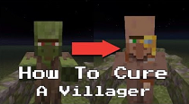

Obchodování s vesničany je možné, pokud má vesničan nějakou profesi
Čím víc hráč s vesničany obchoduje, tím více zkušeností vesničan získává a přibližuje se tak blíž k dalšímu levelu kariéry
- Každý vesničan začíná na levelu "Novic" a končí na levelu "Mistr"
Pokud hráč vyléčí Zombie Vesničana pomocí zlatého jablka a lektvaru slabosti, dostne krom achievementu u vesničana zlevněné nabídky
